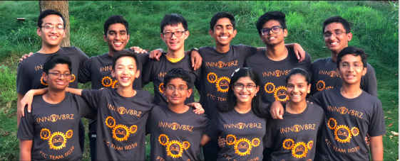

About us
Our team FTC Team 11039, located in Fremont, California is located at the heart of Silicoln Valley. Here we are inspired to pursue our dreams of becoming the future innovaters of the world! We are dedicated not only in improving ourselves with our daily efforts to learn more about the vast field of robotics, but also to give back to the community!
We are extremely passionate about the work we do! However, this wouldn't be possible if someone, sometime, somewhere, had ingited our journey to puruse our dreams! This is something that we want to give to all of our students and we are dedicated to serving the underprivelaged and undererpesented communities of our society.
